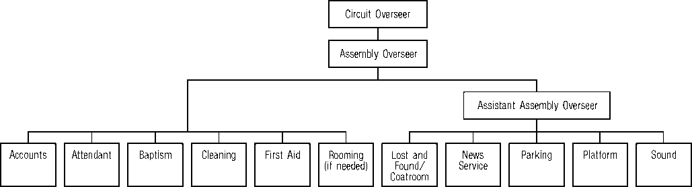

Circuit Organization
Guidelines
March 2013
© 2013 CHRISTIAN CONGREGATION OF JEHOVAH’S WITNESSES All Rights Reserved
Circuit Organization Guidelines English (S-330-E Us) Made in the United States of America
Chapter Paragraphs
1. OVERVIEW OF CIRCUIT ORGANIZATION
Role of Assembly Overseer and Assistant Assembly Overseer
3. DATES AND FACILITIES
When Not Assigned to an Assembly Hall
5. FOREIGN-LANGUAGE FIELD
Simultaneous Interpretation at Circuit Events
Simultaneous Interpretation at District Conventions
Foreign-Language Sessions at District Conventions
Stand-Alone District Conventions
Table of Contents
APPENDIX
A. Checklist for Circuit overseer
B. Checklist for Assembly overseer/Assistant Assembly overseer
C. Sample Contribution Acknowledgment Letter
D. Recordings of Circuit Events
INDEX
1. The Scriptural themes developed at circuit assemblies and special assembly days are spiritual food prepared by “the faithful and discreet slave.” (Matt. 24:45-47) Such timely instruction strengthens our brothers and gives them the opportunity to “widen out” in their Christian association. (2 Cor. 6:11-13) We have every reason to work diligently toward having the assemblies be well-organized occasions.
2. Your willingness to be used as part of the circuit organization is appreciated. (1 Tim. 4:10) To help you care for your responsibilities more effectively, we are pleased to provide Circuit Organization Guidelines (S-330). We encourage you to become thoroughly familiar with the principles and guidelines found herein. Faithfully adhering to these instructions will contribute to a smooth-running circuit event, will bring joy to you and others, and will honor Jehovah, the God of order.—Gen. 6:22; Ex. 40:16; Num. 1:54; 1 Cor. 14:33, 40.
3. Circuit Organization Guidelines is for use by district overseers, circuit overseers, Assembly Hall Committee members, Assembly Hall Committee member assistants, assembly overseers, and assistant assembly overseers. The circuit overseer may also copy and distribute applicable portions of the guidelines to department overseers in each circuit section. However, Circuit Organization Guidelines is the property of Christian Congregation of Jehovah’s Witnesses. A brother may retain his copy of this manual or sections thereof as long as he continues to serve in an appointed capacity within the circuit organization. At such time as he should cease to serve in that capacity, his copy of the manual must be handed over to the circuit overseer.
4. As a general principle, any paperwork, forms, and so forth that are used should only be what is needed to ensure that our brothers get the most spiritual benefit from the program. While the branch office desires to have assemblies run smoothly, there is a need to give priority to displaying love and kindness in dealing with our brothers. (1 Pet. 5:2, 3; 1 John 4:8-10) As overseers, you ought to set an example of tenderness and graciousness to those under your care. (Rom. 12:10) May the God of order be honored and glorified by the efforts of you brothers who are caring for the needs of those attending assemblies!
1. Circuit overseer: The circuit overseer is responsible for the operation of the assembly organization. (od p. 49) If the circuit uses an Assembly Hall, the Assembly Hall Committee may provide a manual with information on the operation of certain equipment or instructions on how certain matters should be cared for, and the circuit organization should cooperate fully with any such arrangements. The assembly overseer and the assistant assembly overseer will cooperate with the circuit overseer in directing circuit personnel as they carry out their work. To ensure that everything is cared for, the circuit overseer will doubtless find it helpful to follow the checklist of things to do personally or he may assign this checklist to others and thereafter verify that all items have been handled.—See Appendix A.
2. If it is necessary to recommend a new assembly overseer or assistant assembly overseer, the circuit overseer will provide the branch office with complete information, including the brother’s address, telephone number, and congregation, together with the reason for the recommendation. If the circuit overseer recommends that a brother be replaced, he will kindly explain to him the reason. (Matt. 7:12) If the brother does not agree, the circuit overseer will ask him to put his reasons in writing and will include his letter with the correspondence.
3. The circuit overseer should maintain a balanced view of his oversight of circuit organization. It is not necessary for each successive circuit overseer to rearrange circuit organization if it is functioning well. Every effort should be made to help assigned brothers to improve in their abilities. He should also be sure to provide an updated list to all overseers whenever changes are made. The list should include the name, mailing address, e-mail address, and telephone number of the assembly overseer, assistant assembly overseer, department overseers, and assistant department overseers.
4. District overseer: The district overseer serves as chairman of the circuit assembly program. He should also take a keen interest in circuit organization. He can offer whatever assistance may be needed. It may be beneficial for him to visit some of the assembly departments with the circuit overseer during the assembly. This gives him an opportunity to get acquainted with the department overseers and their assistants. The district overseer should offer commendation and provide helpful suggestions where necessary. During the meeting with the circuit overseer on Tuesday afternoon prior to the circuit assembly, the district overseer should go over the list of departments, review any comments about
them on the previous year’s District Overseer’s Report on the Circuit and Circuit Assemblies (S-313), and inquire about any problems or details that may need attention.
ROLE OF ASSEMBLY OVERSEER AND ASSISTANT ASSEMBLY OVERSEER
5. The assembly overseer is to work closely with the circuit overseer in caring for circuit organization and should thoroughly understand his responsibilities. This will contribute toward the smooth operation of the assembly and will allow the circuit overseer to concentrate primarily on the program. An assistant assembly overseer is appointed to support the assembly overseer in directing the work of the departments and helping with decisions that need to be made.
6. The branch office appoints brothers to serve as assembly overseer and assistant assembly overseer based on the recommendation of the circuit overseer. These brothers do not make up a circuit committee and do not function as such. They should not be asked to notify congregations of assemblies, inform pioneers of the special meeting before the circuit assembly, distribute talk outlines, preside at rehearsals, gather information for pioneer schools, or distribute lists of elders to the congregations. These responsibilities should be cared for by the circuit overseer.
7. The assembly overseer has been assigned oversight of the departments. To help him care for this responsibility, the assistant assembly overseer will directly oversee the work of some of the departments. While each brother is to show initiative in matters under his control, they should regularly consult with each other so that there is good cooperation between the departments. These brothers should be known as spiritual men who follow Bible principles in dealing with others. This is important, since others will look to them as an example. If problems develop, they should help the brothers in a mature, kind way so that peace and unity are maintained. (1 Pet. 4:8-10) By humbly working together, they will give the circuit unified direction and arrangements will function smoothly. The following chart outlines how immediate oversight of the departments will be cared for by the assembly overseer and the assistant assembly overseer.
CIRCUIT ORGANIZATION
ROLE OF DEPARTMENT OVERSEERS
8. The circuit overseer selects qualified brothers to be assigned in the various departments as overseers. He should choose the most qualified brother for each assignment, realizing that they all have different “gifts.” (Rom. 12:3-8) The assembly overseer and assistant assembly overseer as well as other experienced brothers in the circuit may offer suggestions as to who could be used, which the circuit overseer will greatly appreciate. (Prov. 15:22) When selecting elders to serve as department overseers, it is generally not necessary to contact the local Congregation Service Committee. If a brother’s qualifications are later questioned, the circuit overseer can decide whether the brother should continue to serve. If there are a limited number of elders available to serve and a well-qualified ministerial servant must be used to serve as a department overseer, the local service committee should be contacted first.
9. Qualifications: All brothers who work at the assembly should be happy for the privilege of sharing in the assembly organization. They should always handle matters with love and look for opportunities to be refreshing to others. (Matt. 11:28-30) Those who work as volunteers should always feel free to approach a department overseer with a problem or concern. Department overseers should never be offended if others offer them suggestions. (Eccl. 7:9) All of us can make personal improvement or improve some aspect of circuit organization to Jehovah’s praise.
10. The following departments will require an overseer: Accounts, Attendant, Baptism, Cleaning, First Aid, Lost and Found/Coatroom, News Service, Parking, Platform, and Sound. A rooming overseer should only be appointed if the circumstances merit such. (See 2:72-75.) It is not necessary to have an “administrative assistant” as with district convention organization. The branch office or the circuit overseer may determine if other departments are needed, based on local circumstances. Each department should have an assigned location at the assembly site. It should be kept simple and only have what is needed to get the work accomplished.
11. If deemed necessary and practical, it may be advantageous for the circuit overseer to have a brief meeting with the personnel in charge of major departments in advance of an assembly. This could be done in the first year a circuit overseer serves in that circuit. The circuit overseer may ask the assembly overseer and assistant assembly overseer to share in the meeting, perhaps presenting information related to the departments they directly oversee. On other occasions, it may be sufficient for the circuit overseer to meet only with the assembly overseer and his assistant. In any case, all should be aware of their assignments and be properly prepared to care for their responsibilities.
12. Training: When necessary and at an appropriate time, the circuit overseer should discuss with the assembly overseer and his assistant anything relative to local organization that needs attention, such as any department functions that need to be improved. For example, did the Attendant Department select discerning brothers who took the initiative? Did the Cleaning Department have sufficient volunteer help? Did the Accounts Department use trustworthy, capable brothers, and was there adequate security? The purpose of this review is not to look at matters with a critical eye but to identify ways to train and help others to handle their assignments more effectively. Are there any brothers showing potential for added responsibility? If so, efforts should be made to train these brothers to take on more responsibility.
13. Where deficiencies are seen, it is always encouraged to try first to assist a department overseer whenever possible. However, if changes need to be made in department oversight, the circuit overseer should, in a kind manner, personally inform the brother of the adjustment and the reason for it.
14. During the weekend of a circuit event, the circuit elders will gather to consider financial matters and other matters pertaining to the circuit. (See Instructions for Circuit Accounting (S-331) for detailed direction on matters to be considered.) The assembly overseer will preside at these meetings. Any elder should be allowed to ask questions or express a comment. However, with good planning, communication, and cooperation between the accounts overseer and the assembly overseer, these meetings generally do not need to be lengthy.
ACCOUNTS
1. This department is to care for funds that are donated by the brothers to advance Kingdom interests. The brother assigned as accounts overseer should be a well-qualified, trustworthy elder who is able to comprehend and follow detailed instructions. (1 Cor. 4:2; 1 Pet. 4:10) The assembly overseer should make sure the accounts overseer has the most recent forms and instructions from the branch office in connection with accounting.—See Instructions for Circuit Accounting (S-331).
2. Security: The location of the Accounts Department should not be disclosed to the public, and no sign should be posted at the entrance to identify its location. The attendant overseer should arrange for two brothers to be posted at the entrance door at all times. Additionally, at least two brothers from the Accounts Department should be present in the room whenever assembly funds are being handled.—2 Ki. 12:10; 2 Cor. 8:18-21.
3. Contribution boxes: A responsible elder should be appointed to serve as captain of all functions related to the contribution boxes. This would include the number used, their location, and security. To avoid giving the impression that money is very important to us, several contribution boxes should not be placed in close proximity to each other. Each contribution box should simply be labeled “Contributions.” A trustworthy, reliable sister or brother should be used to monitor any freestanding contribution box while it is in use. When funds are collected from contribution boxes, two brothers from the Accounts Department should always be present. The funds should be taken to the Accounts Department in a discreet manner. At the end of each day, funds should not be collected too soon after the closing prayer. When the funds are received by the Accounts Department, at least two responsible individuals will work together at the counting table. No one is permitted to take money off any counting table until it has been counted, verified, and recorded on the Receipt (CO-40) forms. No book bags, purses, or similar items are permitted around or under the counting tables when money is being counted and recorded on the Receipt forms.
4. Audit: After the assembly, the circuit overseer will arrange for a qualified elder to audit the circuit accounts. The accounts overseer is to provide the circuit accounts file, checkbook with all entries up-to-date, bankbook, and so forth, to the brother as soon as possible.—See Circuit Accounts Audit Report (S-333).
5. Reimbursements: Reimbursement of the special assembly day guest speaker or traveling overseer for travel costs or other incidental expenses incurred in connection with a circuit assembly, an assigned district convention, or a special assembly day or while teaching the Pioneer Service School or moving to a new assignment does not require a resolution. Instead, such expenditures can be approved by the assembly overseer or the assistant assembly overseer.—See Instructions for Circuit Accounting.
6. Contribution acknowledgment letters: Those who wish to deduct their charitable contributions on their tax returns will need to obtain a written acknowledgment from the circuit. This written acknowledgment must state the date and amount of the gift received. Please note that if the gift totals $250 or more on a specific date (cash or check), the acknowledgment letter must also state whether any goods or services were provided by the circuit to the one making the gift. A sample acknowledgment letter that can be used for a contribution of cash in any amount and for checks in the amount of $250 or more is provided in Appendix C. The actual acknowledgment letter should be prepared on circuit letterhead. The acknowledgment letter should be given to the person making the contribution as soon as possible after a contribution requiring an acknowledgment is made.
7. This department assists attendees with seating, deals with emergencies, and helps relieve congested areas. It is preferable that attendants be elders or ministerial servants who are mature, experienced brothers with good judgment. (See 5:8.) Other exemplary baptized brothers may be used if there are not enough elders or ministerial servants available. (od p. 57) They should be alert, courteous, kind, and properly dressed and groomed. Generally speaking, if a brother is not qualified to serve as an attendant in his congregation, he would not be used in such a role at a circuit event. In addition to directions given here, brothers assigned as attendants should read the Question Box in the May 2000 Our Kingdom Ministry and the article “Showing Love for One Another at Assemblies” in the June 15, 1970, Watchtower, pages 380-382.
8. A brief orientation meeting conducted by the attendant overseer with all attendants should be held the first day of the assembly. The meeting can be scheduled to begin 15 minutes before the assembly site opens to the public. The purpose of the meeting is to review the “Attendant” section of Circuit Organization Guidelines (S-330) and any other specific instructions related to the assembly location. Sufficient attendants must be on hand when the assembly location opens.
9. All attendants must wear an attendant badge for identification. If the auditorium at indoor facilities does not have emergency lighting installed, each seating and corridor attendant should bring a working flashlight with him to use in case of an emergency loss of lighting.
10. At all times, including intermissions, attendants are to control seating and crowd decorum, hand out programs as attendees arrive, and render whatever assistance is needed. They should be balanced and kind when providing reminders to brothers about reserving more seats than necessary or talking excessively during the program as well as when offering assistance to parents whose children may be causing a distraction. Before the first session of the day, the printed programs should be passed out near the entrances and in the corridors by the attendants assigned to these areas—not by the seating attendants.
11. Attendants should especially be attentive to the needs of the elderly and the infirm, kindly offering any needed assistance. They should be directed to stop youths from running, jumping, and so forth. Children should not be allowed to play in the parking lot. The Attendant Department is also responsible for ensuring that the temperature in the auditorium is neither too hot nor too cold.
12. The attendants should make sure aisles are clear of any items that could cause someone to trip and fall. They should be watchful for any other safety hazards, working closely with the department overseer when taking measures to remedy the problem. They should also monitor the corridors and in a kindly way approach and invite those talking and roaming around during the program to be seated. They should notify the Cleaning Department of any spills noticed in the building.
13. Attendance count: The attendant overseer will instruct the attendants to count those in attendance once in the morning and once in the afternoon. This is generally to be done at a time that will have the highest attendance for that session, as determined by the district overseer at a circuit assembly and by the circuit overseer at a special assembly day. Who should be counted? The December 1989 issue of Our Kingdom Ministry provides the following guideline on page 7: “When the attendance count is taken, all adults as well as young children who are listening and benefiting, even to a limited extent, should be counted.” The attendant overseer is responsible to oversee the calculation of the figures and then provide the total count to the circuit overseer and assembly overseer. This should be done in a timely manner. However, no one should be prohibited from entering or exiting the auditorium during the count. The attendance should be announced at the end of each session.
14. Baptism: The Attendant Department will reserve the section of seats for baptism candidates on the morning of the baptism day. The baptism overseer should contact the attendant overseer to coordinate these arrangements.—See 2:27.
15. Dealing with difficulties: There may be times when evacuation procedures need to be announced by the circuit overseer, such as when there is a bomb threat, a fire, an earthquake, or another emergency situation. Emergency routes and procedures should be planned in advance, taking into consideration vehicular traffic around the facility. Determine if there is emergency lighting and sound. The latter could simply be a battery-powered megaphone. If there is an emergency, promptly contact the fire department or the police department, depending on the nature of the crisis. Attendants should be familiar with exits and know the appropriate evacuation route in order to assist all attendees to reach safety. They should also be instructed never to lock or obstruct an exit door in a way that prevents opening it from the inside. Prior to the session, all exit doors should be checked to make sure that they are not locked or obstructed in a way that prevents opening them from the inside.
16. If a nonmedical emergency arises, attendants should immediately contact the attendant overseer or his assistant for direction. The circuit overseer and assembly overseer should also be informed immediately. So as to be prepared for a medical emergency, all attendants should know where the First Aid Department is located and how to contact it immediately. Individuals with cellular phones should not take it upon themselves to call emergency services, since the First Aid Department is trained and prepared to care for such matters.
17. All attendants should be alert to any concerns with security at all times. Attendants should watch for individuals who may enter the premises with ulterior motives. Two attendants should discreetly observe such suspicious ones, perhaps alternating with other attendants until the motives of the individuals are determined and the situation is resolved. The words “security” or “guards” should not be used regarding any volunteers—they are “attendants” or “watchmen.”
18. The Attendant Department will provide attendants to control access to the stage at all times the building is open to the public. This should be done in a way that is not distracting to the audience.
19. The attendant overseer should review with all attendants the following information on disruptive individuals:
• It is best to ignore trivial or minor disturbances created by individuals. But if an individual persists in this course of action and is distracting others, he should be asked to leave. If the disruptive individual refuses to leave, you should inform him that if he does not leave and continues to distract others, you will contact the police to have them deal with him. If the individual does not cooperate, the police should be called. When the police arrive, they may be informed that the individual is causing a disturbance and that his implied invitation to attend the meeting has been revoked. The police may also be informed that we are willing to file trespassing charges if it seems prudent and necessary under the circumstances.
• Attendants wisely avoid being provoked into physically removing a disruptive person from the premises, as the individual may be attempting to create a basis for legal action. Thus, the attendants should generally not try to forcibly remove a disruptive individual from the building. If an individual is violent from the outset, the police can be called immediately. There is no need to warn him. In the event that a person is physically attacked, that person has the right to defend himself from harm, and the attendants should do what they reasonably can to help protect the individual. If those who are being physically attacked are unable to flee from an assailant who appears determined to cause injury, a Christian may try to ward off such attacks and even strike out in defense if necessary. Of course, any such defensive action would be solely to protect oneself or others from the attacker until the police arrive.—g91 7/8 p. 13; g87 11/22 p. 28.
20. At times, children or others may set off fire alarms. If this becomes a problem, an attendant should be stationed beside each fire alarm pull station and remain there during the time the building is open to the public.
21. Watchmen: Besides providing attendants wherever necessary, the Attendant Department also furnishes qualified, spiritually mature night watchmen primarily to secure the assembly site. However, departments that have expensive equipment should provide their own watchmen, day and night, since they are familiar with the equipment and needs of the department. The Attendant Department should be notified of any authorized persons in the building after it is secured. Likewise, building personnel on duty should know our watchmen are on the premises. However, no watchmen will be needed if the management locks the building at night with no one in it or if an Assembly Hall is being used.
22. The baptism overseer is responsible for all baptism arrangements. He will work out the details for directing the candidates at the end of the baptism talk, for transportation to the baptism site if needed, and for arrangements at the site and in the dressing rooms. He should examine the baptism site each time prior to use to verify that conditions are appropriate. This is especially important if a facility other than an Assembly Hall is used. He should also make sure in advance that the water temperature will be at a comfortable level at the time of the baptism.
23. Dressing rooms should be arranged in such a way that they provide the baptism candidates with privacy. A qualified person from First Aid should be present for the baptism. Personnel from the Cleaning Department should also be on hand to care for wet areas. At least two volunteers should be assigned to each dressing room to render assistance and watch the belongings of those being baptized.
24. Microphones should not be used to amplify the answers given by the candidates. The candidates will remain for the singing of the concluding song of the session and will file out as soon as it ends. The attendants should assist the candidates as they depart, keeping them together until they reach their destination. Under the direction of the baptism overseer, volunteers assigned to each dressing room should speak with any candidates wearing an immodest bathing suit and assist them to correct the matter prior to leaving the dressing room.
25. Those performing the baptism should be elders whose appearance is exemplary. They should wear plain white T-shirts and modest bathing suits. It is best that brothers with tattoos not be used. As candidates are lowered into the water, it is best to have them bend their knees and lay backward. This avoids having to submerge the candidate again because part of his body came out of the water. Only one brother should be used to baptize a candidate unless circumstances require another person to assist him. Candidates are to be baptized individually, as stated in the May 1999 issue of Our Kingdom Ministry, page 4, paragraph 12: “Since baptism is a symbol of personal dedication to Jehovah God, it would be inappropriate for candidates to hold hands while being baptized.” Candidates should not be allowed to pose for photographs while in the pool either before or after being immersed.
26. Candidates should not be asked if they are being rebaptized. The baptism overseer should simply see that a count is made of all those who get baptized and give this figure to the circuit overseer. At a circuit assembly, the figure should also be given to the district overseer.
27. The Attendant Department may assist as needed during the baptism, such as by directing observers. The attendant overseer can check with the baptism overseer to see what is needed and then cooperate with these arrangements. Precautions must be taken to ensure safety, including caring for wet floors.
28. Candidates with communicable diseases: If a candidate with a communicable disease presents himself for baptism, the baptism overseer and the circuit overseer (along with the coordinator of the body of elders and, if possible, another elder from the candidate’s congregation) should meet with the candidate and explain the following options available to him. The brothers performing the baptism should be informed of the health issue. This will allow them to make a personal decision as to whether they feel there would be a risk that they would be unwilling to take.
• The candidate may attend the circuit event, listen to the baptismal discourse given there, and then be taken to a body of running water to be baptized.
• The candidate may attend the circuit event, listen to the baptismal discourse, and then be baptized in his hotel or motel room or in a private home where there is a large tub that can be used for this purpose.
• If the candidate is sensitive to others becoming aware of the fact that he has a disease and does not want it to become known to others, he may attend a circuit event to which his congregation is not assigned, listen to the baptismal discourse, and then be baptized in a body of running water.
• The candidate may request that the elders arrange to have a private baptism at the local congregation.
29. This department is responsible to ensure that the assembly site maintains a high standard of cleanliness that reflects favorably on Jehovah’s name. (Lev. 20:26) The assembly site is a place of pure worship, and those who supervise this department should understand the importance of keeping the site clean. The brother assigned as department overseer should be well organized and should be a good communicator. It is important to select dependable volunteers and to explain assignments clearly.
30. When cleaning at the conclusion of the day’s program, instruct cleaning personnel to be considerate of any who may be greeting others, visiting with the traveling overseers and their wives, conversing with the Bethel speaker and his wife, and so forth. Circuit events are occasions for brothers ‘to encourage one another’ and enjoy spiritual fellowship, especially with those they may not regularly see. (Heb. 10:24, 25) It should not be expected that everyone will immediately leave the auditorium after the concluding prayer. Often, the cleaning can be accomplished by working around those who are enjoying Christian fellowship. If any need to be asked to move to allow cleaning in a certain area, the cleaning personnel should be instructed to do this in a loving manner.
31. Assignments: Congregations can be assigned to clean specific seating sections in the auditorium, corridors, offices, restrooms, exterior grounds, and so forth. The Cleaning Department can write the congregations in advance to indicate their assigned section for cleaning and to provide any needed instructions.
32. If the building requires preassembly cleaning, the assembly overseer will make arrangements with the cleaning overseer to see that this is accomplished. The Cleaning Department should write a letter inviting congregations to support this activity.
33. Cleaning and restroom supplies: If the supplies of a rented facility are used, they should be closely monitored and the used items inventoried. This will ensure that the assembly organization is not unnecessarily charged for items that were not used in connection with the assembly. As a way of minimizing costs and to make sure equipment is cared for, the cleaning overseer should be sure that cleaning personnel are conservative when using restroom supplies. Mops and mop buckets should be cleaned daily. At the end of each assembly, mops should be thoroughly washed in water mixed with detergent and bleach, rinsed, dried, and stored. The cleaning overseer should check that all cleaning equipment, such as vacuum cleaners, is in good working order. All cleaning equipment, such as vacuum cleaners, brooms, dustpans, and reusable rags, should be cleaned and stored properly.
34. While it does not seem necessary for everyone in the Cleaning Department to be provided with latex gloves, it would be appropriate to make latex gloves available to volunteers cleaning restrooms or other areas of concern as indicated in the March 22, 1994, Awake!, page 14, paragraph 6, which states: “Because the Kingdom Hall is a public facility, it might be wise to have on hand cleaning supplies with a box of Latex or vinyl gloves available to provide proper care and cleanup in case of an accident.”
35. Restrooms: Each restroom is to be checked regularly by a monitor to (1) restock supplies of paper goods and soap, (2) check for spills and plumbing failures, and (3) make sure children are not playing in restrooms. Any problems encountered should be reported to the cleaning overseer. Avoid inconveniencing the brothers and sisters by closing multiple restrooms at the same time for cleaning.
36. Trash disposal: Arrangements should be made ahead of time for the disposal of all trash. When local laws stipulate separation or disposal of trash, these should be adhered to closely. This would include any recycling laws. If the building does not have sufficient refuse containers, it may be possible to borrow containers or to make up inexpensive corrugated cardboard boxes for this purpose. No announcements should be made to ask attendees to take their trash with them as they leave the facility.
37. Those assigned to pick up garbage liners out of the receptacles should not push the trash down with their hands. They may be injured if a sharp object has been deposited in the trash. It would be good for those who handle this assignment to wear heavy work gloves. Perhaps a piece of wood or similar object could be used to press down the trash if necessary.
38. The purpose of the First Aid Department is to administer only emergency first aid until an individual can be placed under the supervision of local health-care professionals who are equipped to handle the situation. This limited function does not include diagnosing or treating chronic illnesses or serious injuries, administering treatment (such as chiropractic), or providing other medical care. This could expose the branch office, the Assembly Hall, and others to malpractice lawsuits. This should be explained to the brothers and sisters serving in First Aid. If an automatic external defibrillator is already available at the assembly site, then you should arrange for a volunteer who is trained to use this type of equipment properly to be on duty in the First Aid Department at all times.
39. Personnel: Only adult brothers and sisters who are exemplary and in good health qualify to serve in the First Aid Department. Any medical professionals, including doctors, nurses, paramedics, and emergency medical technicians (EMTs), who volunteer to serve in First Aid should be licensed or certified. They should provide the First Aid overseer with a copy of their certification. In an emergency situation, First Aid volunteers should give way to anyone more qualified than they are. Any medical professionals who volunteer to serve in First Aid do not represent the department if they choose to offer assistance beyond the limited departmental assignment already described. If someone decides to administer professional care at the assembly, they should understand that this is their own personal decision and responsibility.
40. Confidentiality: First Aid volunteers should treat the details of situations cared for by the department, including any medical problems described by those who visit the room, as confidential. These details should not be discussed with unauthorized individuals. Completed log entries of incidents should be filed discreetly in the First Aid room, in a location not visible to passersby, and log sheets should be turned in on the final day of the program. If it is determined that congregation elders should know about a matter involving a publisher, this decision should first be approved by assembly oversight. In such a case, the individual may be willing to discuss the matter personally with an elder at the assembly.
41. Baptism: One qualified representative from First Aid should be present to monitor the entire baptism.
42. Scheduling: The First Aid room should be staffed to the degree possible by at least two persons at all times, including before and after the program when the public has authorized access to the facility. If sisters are scheduled to work together, they should be able to communicate immediately with the First Aid overseer or his assistant. Sufficient personnel should be scheduled so that all volunteers may enjoy the program and fellowship. However, if a volunteer fails to arrive on schedule, volunteers on duty should remain at their assignment until a replacement arrives. First Aid personnel with cellular telephones should keep them on and in vibration mode during the entire program.
43. Room and supplies: It is preferred that a First Aid room be located on the ground level of the assembly facility. This is essential, since a serious condition could worsen in an attempt to climb stairs. The location should be equipped with a telephone having outside 911 access. The First Aid overseer will inform the assembly overseer of all supplies that are running low and need replenishing, using the inventory list provided to him by the assembly oversight for this purpose. Any product with an expiring “Use by” date should be properly discarded.
44. Assembly oversight will ensure that the First Aid room contains directions and/or a map to one or more nearby hospitals, as well as directions to one or more locations where prescription and over-the-counter medications may be purchased.
45. First Aid volunteers should leave the room clean and neat at the end of each day’s program. During the assembly, the First Aid room should not be used for any purpose other than first aid, and volunteers who are on duty should give this assignment their undivided attention.
46. No prescription drugs will be stocked in the department, and no First Aid volunteer will recommend or prescribe any medication or treatment. However, the First Aid Department will have a small supply of pain relievers, bandages, disinfectants, feminine hygiene items, and so forth for accidents, emergencies, and any unexpected minor medical needs. Individuals should be given the item needed and then encouraged to obtain future needs from a local source. First Aid personnel should take appropriate steps to protect themselves from the transmission of disease by using latex gloves and washing their hands thoroughly each time that assistance is rendered.
47. No uniforms or special badges are to be worn by First Aid volunteers. Oxygen should not be brought in by the assembly administration. If oxygen is on the premises, only a licensed doctor, registered nurse, paramedic, or certified EMT should administer it. The taking of blood pressure, when deemed necessary in caring for an emergency, must be done by someone licensed or certified to do so. When handling cases such as seizures and when administering CPR, modern procedures should be followed to protect both parties from the transmission of diseases. Standard protection should be on hand for such use.
48. A cot or bed may be set up in First Aid for emergency use, not for people who are tired and want to rest. The cot should be screened off or located in an adjacent room so that the person is not visible to those entering the department. Depending on the type of illness, the person may be encouraged to return to the audience to listen or to go back to his hotel or home. Coverings on the cot and pillow should be changed after each use. Disposable pillowcases and sheets may be obtained for this purpose.
49. Emergencies: If someone needs attention beyond simple first aid, it should be recommended that he be transported to the hospital. If the individual is in agreement, First Aid may call the ambulance service or 911 to make the request. If emergency personnel are called, First Aid should arrange for someone to meet them upon their arrival at the assembly site so that they can be escorted to the individual’s location. On the other hand, the individual may decide to drive himself to the hospital or to have a family member do so. Whether the person is transported by ambulance or privately, it would be good for a family member or friend to accompany the individual to the hospital. If the person refuses to be transported, First Aid may wish to consult with a close family member, if one is present, to explain why the person should seek medical help. If the person still refuses, then it is his or her own responsibility. However, the First Aid volunteer should make an entry in the First Aid log stating that the person refused to go to the hospital. Another First Aid volunteer who witnessed the matter should also initial the log entry.
50. First Aid log: The First Aid room should be equipped with multiple blank copies of a log form, and each incident handled by First Aid volunteers should be logged. Each entry should include the name and congregation of the person(s) involved, the date and time of the incident, and a brief description of the problem and how the matter was handled. Each volunteer who completes an entry should initial it. The log should be clear and legible in the primary, official, or most widely used language of the country, regardless of the language of the assembly program. At the conclusion of the assembly, the circuit overseer will retain the original First Aid log for seven years in the circuit file.
51. Accident reports: If a person suffers an injury that requires medical treatment beyond minor first aid or if the person refuses first aid after a minor accident, then an Accident Report (TO-5) should be filled out and forwarded to the branch office. Be sure to obtain the contact information of an elder from the injured person’s congregation so that there is appropriate follow-up on the progress of the individual. Follow the instructions found on the form, being careful not to discuss fault or potential liability with any unauthorized person.
INSTALLATION
52. In view of the size of a circuit event, in most cases there is no need to establish an Installation Department. Each department is responsible to set up and dismantle whatever is needed.
LITERATURE
53. There is no arrangement for distributing literature at circuit assembly and special assembly day programs. Therefore, literature counters should not be operated.
LOST AND FOUND/COATROOM
54. Lost and Found: It is generally most effective to locate this department in the coatroom area. The department should be staffed at all times from the time the building is opened until it is closed each evening. Inexpensive articles brought to this department during the assembly should be laid out neatly so that they can easily be identified. However, wallets, purses, and expensive articles are handled more carefully and put out of sight. Persons claiming them must be able to identify the items before seeing them.
55. If individuals, particularly children, become separated from their groups or parents, they should be brought to the Lost and Found Department. Sisters are helpful in caring for lost children. No personal announcements regarding this are to be made over the sound system.
56. After the assembly, any remaining lost and found items should be held by the department overseer, since individuals in the congregations may eventually attempt to locate what they have lost. If they can sufficiently describe the lost item as theirs, it should be forwarded to them at their expense. Unclaimed cash should be given to the Accounts Department at the conclusion of the assembly and deposited as a contribution to the circuit. Unclaimed items of significant monetary value, such as watches, rings, and cameras, should be held by the assembly overseer until the next circuit event. Thereafter, they should be exchanged for their monetary value and the proceeds deposited in the circuit account. Songbooks, Bibles, and items of little monetary value, including inexpensive costume jewelry, should not be sent to the branch office. They can be disposed of locally at the discretion of the department overseer.
57. Coatroom: Some means of identifying luggage, parcels, and other checked items should be used. Some have found a number system to be helpful. All checked items other than clothing should be clearly identified by the owner.
58. The branch office does not appoint news service representatives. Instead, the circuit overseer assigns the news service representative in the circuit, as he does other circuit personnel aside from the assembly overseer and his assistant. If there is a change in the news service representative, the circuit overseer should fill out the Circuit News Service Representative (S-304) card in duplicate, keeping one card for the circuit file and submitting the other to the branch office. Likewise, if any information listed on the card changes, such as address or congregation, the news service overseer should promptly inform the circuit overseer so that a new card can be submitted.
59. If there are radio or television stations or newspapers in the circuit’s territory that have an interest in receiving information concerning a particular assembly, the assigned news service representative and/ or his assistant may provide what is appropriate to promote Kingdom interests. There is no need to initiate contact with the local news media or to provide information to news outlets that do not specifically reach out to the population of the circuit’s territory.
60. In metropolitan areas where there are several circuits using the same facility for assemblies, there may be no news outlets targeting the population of a particular circuit. In such cases, the duties of the news service representative can be confined to making general information available about Jehovah’s Witnesses in response to any inquiries from the news media or other agencies. Often, brothers assigned as news service representatives for the circuit find that they can also take on additional responsibilities in the circuit if this is needed.
61. At times, opposers of the truth attempt to influence others in a negative way by submitting defamatory and false information to the media. Attempts are also made to draw us into the controversy by inviting us to participate in programs where the facts are often twisted to discredit the truth and to bring reproach upon Jehovah and his organization. Brothers should not be drawn into any program that would involve interfaith or that would resemble a debate or take the form of public argument. They should avoid all such controversial programs, which promote questions and debates about words, giving rise to further disputes rather than providing information that is Scriptural, factual, and upbuilding.—2 Tim. 2:23.
62. The Parking Department will oversee parking facilities controlled by the assembly. Because of the liability involved, parking attendants must not direct cars off or onto public streets. They should only direct cars within the circuit event premises, and even then, there is liability and responsibility involved. Also, children should not be allowed to play in the parking lot. A practical plan and a diagram for traffic flow and use of space should be developed and clearly explained to the parking attendants ahead of time.
63. Only mature brothers should be used as parking attendants. It would be best if they are elders or ministerial servants. It is suggested that any assigned brother under 20 years of age should also be a ministerial servant, since good judgment is required if individuals become difficult to deal with.
64. All parking attendants must wear a parking badge and should wear at least a shirt, tie, and slacks. A suitable hat and umbrella may be useful. High-visibility safety vests may be worn if conditions warrant it.
65. Parking lots should be fully staffed by parking attendants each day from the opening until the closing of the parking lots. During the morning rush period, a sufficient number of parking attendants should be stationed at the entrance and throughout the lot to give proper direction to drivers on where to park. During the evening rush period, a sufficient number of parking attendants should be stationed throughout the parking lot to control traffic and direct drivers to the exits. Parking attendants also direct those with government-approved disabled placards or license plates to parking spaces reserved for the disabled. No one else is to be allowed to park in these reserved spaces.
66. Assigned in pairs and working in rotation, parking attendants are required to monitor the parking areas controlled by the assembly to prevent vandalism and theft, especially during the program, and to remain until the lots are empty. If vandalism or theft is observed, they are to contact the assembly overseer or his assistant immediately and he will contact the police to handle the problem. The parking overseer should also be informed immediately.
67. The platform overseer works closely with the Sound Department and under the direction of the traveling overseers to ensure that the program is properly presented. All brothers on the platform must be exemplary in their conduct, dress, and grooming. Brothers assigned to adjust the microphones should be trained by the Sound Department in advance.
68. Appropriate props, furniture, and stage lighting should be arranged in keeping with the program and platform requirements. One or more large-faced clocks that are easily readable by the speaker should be placed on the platform. Arrange with the Attendant Department for attendants to control access to the stage during the sessions in a way that is not distracting to the audience. Attendants should also control access to the stage before and after the sessions.
69. The Platform Department is responsible for designing and building a stage if one is not available at the assembly site. It should be kept simple and dignified, remembering that spiritual food is dispensed from there. To the extent possible, the stage should be high enough to have comfortable visibility for all, including our older ones who are usually sitting in the front rows. Decorations should be kept simple and should not detract from the speaker or the program.
70. Unlike the district convention organization, the platform overseer is responsible for any signs that may be needed. He may assign a reliable brother to care for this task. At some assembly sites, it may be necessary to make signs for the assembly theme and the yeartext, as well as other signs for the various departments. All signs should be dignified. If video projectors are installed, they may be used to transmit the program to those seated in the main auditorium and auxiliary seating areas. If this is the case, the yeartext and the theme of the assembly program would need to be displayed by some other means so as to be visible throughout the entire program. Projectors should not be used by program participants during their talks to highlight scriptures, main points, and so forth.
71. Generally, there is no need to establish a separate department for this purpose. Each department can care for its own needs. The assembly overseer or his assistant should indicate his approval of normal operating expenditures by signing either the invoice or the check.
72. A rooming overseer may be appointed, depending on local circumstances. He will work under the immediate supervision of the assembly overseer. The rooming overseer should be provided with a copy of Circuit Rooming Guidelines (CO-70) and any related instructions from the branch office.
73. The circuit overseer should consider it his responsibility to extend hospitality to the district overseer and any visiting speaker from the branch office. (Rom. 12:13) This would include caring for rooming, meals, and, where applicable, travel to and from the airport. The assembly overseer may take the initiative to check with the circuit overseer to determine what accommodations will be needed by the traveling overseers and any visiting speaker from the branch office.—See 4:3-5.
74. Circuit events at an Assembly Hall: In a number of branches, a brother has been assigned to serve as rooming coordinator for each Assembly Hall. He assists the Assembly Hall Committee in caring for the accommodations of those attending circuit events at an Assembly Hall. Detailed instructions are generally provided by the branch office, and these should be followed closely. In such circumstances, it is generally not necessary to appoint a brother as rooming overseer. The assembly overseer and the assistant assembly overseer should be able to care for whatever is needed in this connection.
75. Private-home accommodations: In some areas, it may not be possible to house everyone in hotels because of financial limitations and so forth. In such cases, the rooming overseer will coordinate obtaining suitable accommodations for those brothers in need. He may write congregations near the assembly site to determine what may be available.
76. Good-quality sound throughout all the seating areas is vital for the audience to understand and to benefit from the spiritual program. The circuit overseer should be sure that the Sound Department has properly studied the facility layout and that adequate equipment is installed so that all can hear clearly. If there is an FM transmitter already available at the Assembly Hall or site, the Sound Department is responsible to transmit the program to those in attendance. Any recorders used by those in attendance should not be connected to the facility’s electric or sound system and may be used only in a way that does not disturb others. An official recording of the program should be made for those with limiting circumstances.—See Appendix D.
77. The sound overseer works closely with the Platform Department and under the direction of the traveling overseers to see what microphones, audio recordings, and so forth, are necessary for all the program parts. It is not necessary for a brother to lead the singing. The circuit overseer should make sure that the Sound Department receives the music recordings provided by the branch office. Once the circuit event has concluded, such files should not be retained by anyone for personal use.
78. The department should not be overstaffed or take up a lot of space. It is generally best to have the location of the department and sound equipment in the back of the seating area so that it is not distracting to the audience. This allows for the brothers operating the controls to see the stage and hear the program as does the audience. Only the brothers assigned to operate the sound equipment and controls should be at that location. A brother should be assigned to monitor the sound equipment at all times in the event an emergency arises and the sound system is needed.
79. Reasonable effort should be made to provide sound to volunteers serving during the sessions. Localized sound should be provided only for volunteers whose assignments require them to be on duty away from the auditorium.
80. All sound equipment should be installed, tested, balanced, checked for proper coverage, and ready well in advance of the start of the assembly. The Sound Department should be fully ready for the brothers handling the platform to have access to the sound equipment for the walkthroughs. It would also be advisable for a brother working in the Sound Department to be present for the walk-throughs. The background music played just prior to the start of the program should not be so loud that brothers need to raise their voices to be heard in conversation. Likewise, the volume of the music used to lead the audience in singing should not be so soft that it is difficult for some to sing out in a heartfelt manner. Neither should it be so loud that it drowns out the voices of the audience. Brothers who handle the sound equipment should always remain alert and attentive to their assigned duties in this matter.
VOLUNTEER SERVICE
81. There is no need for a Volunteer Service Department to be established at circuit events. Each department is responsible for recruiting its own volunteers. Any volunteers not in your own congregation should be approved by the elders of the congregation they attend. There is also no need to have volunteers fill out a form. All volunteers should be treated with love and Christian kindness so that they will joyfully accept future assignments, realizing their service is done “as to Jehovah, and not to men.”—Col. 3:23.
82. Volunteers must be at least 16 years old to serve alone; otherwise, they must serve with a parent or an adult in an assignment appropriate to their age and experience. Unbaptized persons or undocumented aliens may volunteer but may not be placed in oversight or be given any assignment they would not normally handle in their local congregation. Department overseers should remind all volunteers to be exemplary in conduct, dress, and grooming so as not to bring reproach on Jehovah or his organization. If a volunteer is observed to be immodest or acting inappropriately, he should be taken aside immediately and lovingly counseled, since his conduct and appearance reflect poorly on Jehovah’s or-ganization.—1 Tim. 2:9, 10; 4:12.
83. Sisters should not be given an assignment that involves giving direction to brothers. As long as good judgment is used, there is no objection to a wife serving in the same department as her husband.
84. There is no provision for pioneers to receive credit for time spent working before, during, and after a circuit event. Special pioneers and Bethelites can be used as long as such participation does not inhibit their ability to fulfill their special full-time service assignment.
Chapter Three
1. Traveling overseers and Assembly Hall Committees receive an annual schedule showing the assigned dates of their circuit assemblies and special assembly days. Since many factors are taken into consideration when preparing this schedule, it is important that each circuit use the dates it is assigned. Wherever possible, the branch office schedules special assembly days so that circuits or sections of circuits have the program on Saturday one year and on Sunday the next year. (Congregations organize extensive group witnessing on the weekend day when no assembly is scheduled.) If a circuit has more than one section, the circuit overseer should not change the order of the special assembly days without checking with the branch office.
WHEN NOT ASSIGNED TO AN ASSEMBLY HALL
2. If a circuit is not assigned to an Assembly Hall, the circuit overseer upon receiving the schedule should immediately determine which facility(ies) he would like to use for all the events during the service year. (See the first two bullet points below.) Although many details can be delegated to other responsible elders, the circuit overseer should keep abreast of all developments and have assembly matters under his control. If it is necessary for him to go to the assembly city to care for matters, he should try to do so without unduly interfering with the activities scheduled for the congregation being served that week. If there are no suitable facilities available on the dates assigned, the circuit overseer himself should immediately telephone the Assembly Scheduling Desk in the Service Department at (845) 306-1100. He should know the dates that are available for the period from two months before to two months after the assigned dates so that direction may be given without undue delay. However, before the circuit overseer recommends that the assembly dates be changed, a thorough search should be made for other suitable facilities that may be available on the assigned dates.
• If the desire is to use a college, university, or commercial facility, the circuit overseer should first personally telephone the Convention Desk at (845) 306-0400 so that an appointed facility contract representative can be assigned to contact him. This applies even if the facility was used by the circuit in the past or the last negotiations were carried out under the direction of the Convention Desk.
• If the use of a high school or lower school facility is desired, the circuit overseer (or the assembly overseer, the assistant assembly overseer, or another qualified elder) may handle the negotiations. However, before signing any proposed contract with the school, please
send it directly to the branch office c/o Christian Congregation of Jehovah’s Witnesses, Attn: Legal Department, 2821 Route 22, Patterson, NY 12563-2237. If urgent, the proposed contract may be faxed to (845) 306-0709. Again, this applies even if the school was used by the circuit in the past or the last negotiations were carried out under the direction of the Legal Department.
• During the initial negotiations with the facility management, two brothers authorized to negotiate should conduct a complete walkthrough of the building, equipment, and parking areas that will be part of the all-inclusive contract. They should look for any unsafe conditions or defects within the building, its equipment, and the parking areas. If the condition of any of these areas is not suitable for our events and would present a hazard to our attendees, the negotiations should be discontinued and the brothers should proceed to locate another facility that is safe and suitable for our event needs. If possible, the areas of concern may be tactfully mentioned to the management. If they agree to correct the unsafe conditions, another site visit can be scheduled for a future time.
• If the building, equipment, and parking areas are reasonably safe and in good order, you may attempt to obtain a contract approved by the branch office as noted in the first two bullet points of this section.
• Once the contract is approved and signed, an Assembly Insurance Certificate Request (TO-17) should be sent to the branch office. This should be done a minimum of two weeks in advance of the event.
• After an approved contract has been received from the branch office and the contract is signed by the facility management, you should proceed as follows: At the beginning of the move-in period for the event, the assembly overseer and assistant assembly overseer should both conduct a complete walk-through of the building, equipment, and parking areas included in the contract. They should note and list any existing minor damage or defects, date and sign the list, keep one copy for the circuit, and provide the facility management with one copy. Even though the conditions noted may be considered minor, it may still be necessary to take appropriate measures to protect the attendees from injury.
• At the end of the event, after most of the cleaning and move-out is completed, the assembly overseer and assistant assembly overseer along with a facility representative should conduct a final site inspection. During this walk-through, you will want to use the original signed list in order to identify whether or not any damage was caused as a result of our event. Thereafter, the Site Inspection Release Agreement (CO-14) should be signed by both parties. A copy of the form should be given to the facility management, and another copy should be attached to the contract and kept in the circuit file.
3. If after an assembly the circuit overseer finds that the facilities were crowded, he may wish to consider with the district overseer, the assembly overseer, the assistant assembly overseer, and other mature elders in the circuit the possibility of dividing the circuit into A and B sections for future assemblies. The circuit overseer should then call the branch office as soon as possible to discuss the matter. If approved, the circuit overseer will be asked to submit a written request to the branch office. It may be possible for the request to be handled before the schedules for the next service year’s assemblies are made.
4. It is preferable not to have two or more circuits combine for their assembly. However, if circuits in a large city cannot make separate assembly arrangements, then it is permissible for two, or at most three, circuits to have a combined assembly. The circuit overseer(s) should call the Assembly Scheduling Desk in the Service Department to discuss which date should be used for the combined assembly and which parts the circuit overseers will present. The circuit overseers will decide among themselves who will handle program parts to be given by local brothers, who will care for the various assembly departments, and so forth.
5. The circuit overseer should confirm arrangements with the branch office by sending a Circuit Assembly Confirmation (S-328a) form or a Special Assembly Day Confirmation (S-328b) form. This is required whether the circuit section uses an Assembly Hall or not. If an Assembly Hall will be used, confirmation for both the circuit assemblies and the special assembly days for the next service year should be submitted immediately following the circuit assemblies for the current service year. If an Assembly Hall will not be used, confirmation should be sent to the branch office only after a facility has been secured. This should be done at least three months prior to the circuit event.
6. Circuit overseers notify congregations of circuit assembly and special assembly day arrangements by means of the S-317 form. Notification for the next service year’s assemblies should normally be sent to congregations as soon as the dates have been confirmed. The circuit overseer also sends the congregations a supplementary letter covering certain details of the assembly, such as the schedule of sessions and baptism arrangements.
7. Severe weather conditions may call into question whether an assembly program may be held. The district and circuit overseers (or the circuit overseer if presiding at a special assembly day program) should consult with responsible brothers who are familiar with travel and other conditions locally. Canceling an assembly is a drastic step that is usually necessary only under emergency conditions. Before a decision is reached, the district overseer (or the circuit overseer if presiding at a special assembly day program) should telephone the branch office for direction. If the decision is to cancel, it is best to cancel a full day’s program rather than just a portion of it. If it is not possible to contact the branch office and the traveling overseers decide to cancel the program, it is important to telephone the branch office as soon as possible thereafter so that alternate arrangements can be made.
CHAIRMEN
1. Circuit assemblies: The district overseer serves as chairman at circuit assemblies. The circuit overseer and district overseer will work together closely in arranging for the program. The circuit overseer should be present for rehearsals that the branch office directs the district overseer to conduct. The district overseer should approve all announcements that will be made to the audience.—See 4:6-12.
2. Special assembly days: The circuit overseer serves as chairman at special assembly days. He takes the lead in arranging for the special assembly day program, caring for rehearsals, and so forth. This is true even when the district overseer is assigned as the visiting speaker. The circuit overseer should approve all announcements that will be made to the audience.—See 4:6-12.
VISITING SPEAKERS
3. The circuit overseer will take the lead in extending hospitality to the visiting speaker at a special assembly day. (Heb. 13:2) He should communicate with the visiting speaker well in advance. To assist the visiting speaker with his travel arrangements, the circuit overseer should include in his letter such points as
• His permanent address
• A phone number where he or a responsible local brother (such as the assembly overseer) can be reached should there be last-minute changes, such as in travel plans
• Information about the airport nearest the facility being used
• How much travel time is required from the airport to the visiting speaker’s accommodations and/or the facility being used
4. If circumstances allow, it is best for the circuit overseer, or a responsible local elder from the circuit being served, to meet the speaker personally on his arrival and to take him to his transportation for his return trip. He can take the speaker to his accommodations and provide for an evening meal if needed. It is the responsibility of the circuit overseer to see that the visiting speaker’s needs are cared for. Other needs that should be cared for during the weekend include providing adequate but simple food items for breakfast and the noon meal each day. It would also be a kindness to be sure there are evening meal arrangements in place for the speaker if necessary.—See 2:73.
5. The assembly overseer’s use of circuit funds to reimburse the travel expenses of special assembly day speakers is considered a normal operating expenditure and does not require a resolution.—See Instructions for Circuit Accounting (S-331).
6. The purpose of our assemblies is to provide spiritual instruction and encouragement for all who attend. (Heb. 10:23-25) Additionally, announcements may need to be made to those assembled in connection with the program, the use and maintenance of the facilities, traffic and security measures, and the privilege the brothers have to make voluntary contributions. At circuit assemblies, all announcements should have the approval of the district overseer. At special assembly days, the approval of the circuit overseer must be obtained. This direction also applies to necessary announcements prepared by an Assembly Hall Committee; these should be given to the district overseer or circuit overseer for approval. Of course, there should be close cooperation between traveling overseers and Assembly Hall servants in this matter. If a genuine emergency does arise, then good judgment should be used by the responsible brother. (1 Cor. 16:14) Only meaningful and truly necessary announcements should be made, and even they should be as brief as reasonably possible. No announcements should be made regarding gum chewing in the auditorium.
7. Attendance figures should be announced at the end of each session. On the first day, the announcement concerning the baptism arrangements will be made. In some areas, it may be advisable to request those having cellular phones to turn them off or set them on silent mode during assembly sessions.
8. Meeting with those interested in the Bible School for Single Brothers: During the first announcement period on the first day of the circuit assembly, the district overseer will arrange for the chairman to make the following announcement: “Baptized single brothers 62 years of age and younger who are interested in attending the Bible School for Single Brothers should plan to attend the meeting for Bible School for Single Brothers applicants [indicate day] at [indicate time] in the [indicate location]. Please note: All baptized brothers, even those younger than 23 years of age, are invited.”
9. Announcements about donations: At circuit assemblies an announcement informing the brothers of their privilege to contribute should be made Saturday afternoon and Sunday morning during the times indicated on the program for announcements. At special assembly days, an announcement about donations should be made during the morning session at the time the program calls for announcements. Generally, when such announcements are made, there is no need to add comments on how to claim a tax deduction. Nothing should be added to the announcement to imply that contributions made will also assist in financing the worldwide work.
• Donation announcements should generally read as follows: “How happy we are to enjoy what Romans 1:12 describes as ‘an interchange of encouragement’ and to be refreshed by timely spiritual instruction! One way that we can show our appreciation for Jehovah’s goodness is by personally helping to defray the expenses incurred for the use of this building, the utilities, the supplies, and the services needed to make this assembly possible. Remember that this assembly is supported entirely by your voluntary donations. Clearly marked boxes are located throughout this facility for those who would like to contribute. Please be assured that your self-sacrificing efforts are very much appreciated.”
• In the event that you are meeting in a facility in which you do not have to pay for supplies, utilities, or occupancy, you may use the following announcement instead: “How happy we are to enjoy what Romans 1:12 describes as ‘an interchange of encouragement’ and to be refreshed by timely spiritual instruction! One way that we can show our appreciation for Jehovah’s goodness is by personally making a donation toward circuit expenses. Clearly marked boxes are located throughout this facility for those who would like to contribute. This assembly is supported entirely by your voluntary donations. Please be assured that your self-sacrificing efforts are very much appreciated.”
10. Circuit Assembly/Special Assembly Day Financial Report (S-332): The financial report should be read on Sunday morning at circuit assemblies and before the final talk in the afternoon at special assembly day programs.
11. Personal announcements: Neither the chairman nor anyone else will make personal announcements or convey personal greetings over the public-address system. Its purpose is to broadcast the assembly program and information pertinent to the functioning of the assembly.
12. Announcements regarding food and drink: Whether or not eating is allowed in the auditorium likely depends greatly on the facility’s design and usage. At Assembly Halls with a dining room, asking the brothers and sisters to enjoy their food in the designated area would not be unreasonable. However, limiting what type of nonalcoholic drinks may be brought into the designated area would be inappropriate. Announcements regarding the use of food and drink should only be made once during the circuit event. In the case of circuit assemblies, this should be done on the first day.
SIMULTANEOUS INTERPRETATION AT CIRCUIT EVENTS
1. It is preferred that circuit events be presented directly in the foreign language. If that is not possible, the circuit overseer may request that simultaneous interpretation be presented. However, such interpretation is difficult to do. The circuit overseer should carefully consider with the responsible local brothers whether such interpretation is necessary or practical. In some cases, it may be sufficient for someone to assist the foreign-speaking person to locate Bible texts as he listens to the program. Or perhaps a publisher who knows the foreign language may share the highlights of the program at another appropriate time.
2. In other cases, a different circuit may already be scheduled to present the special assembly day and circuit assembly programs directly in the foreign language. Because of distance or other factors, the congregation or group using that language in another circuit might not be officially assigned to attend. However, if publishers in the foreign-language congregation or group would like to attend such circuit events, there is no objection to their doing so. Good communication among the circuit overseers involved will help resolve questions on scheduling a visit to the congregation or group.
3. Of course, there may be valid reasons to organize simultaneous interpretation at circuit events. Before doing so, however, the circuit overseer should write the branch office for approval and include answers to the following questions: How many publishers and interested persons would benefit from simultaneous interpretation of the program? How much of the program will be interpreted? How many elders and ministerial servants qualify to interpret the program? How many other publishers qualify to interpret the program? Would interpreting the program work a hardship on the interpreters or their family? What arrangement will be made so that others in attendance will not be unduly distracted by the interpretation? (Normally, this can be done by using an FM transmitter and having the attendees each bring a small FM receiver with earphones and sit in the audience. The interpreters can sit in a separate area and use earphones or a speaker to hear the English program and then interpret the program into a microphone connected to a mixer for the FM transmitter. This may require the circuit to purchase such equipment.) After considering the matter, the branch office will reply to the recommendation.
4. If simultaneous interpretation is approved for the circuit events, a qualified brother and an assistant should be selected to oversee the arrangement under the direction of the assembly overseer. If possible, the brother selected should know the foreign language. The district or circuit overseer should meet with the one overseeing the interpretation to decide on matters such as the seating area, lighting, and sound.
5. It is the circuit overseer’s responsibility to assign interpreters at circuit events. Of course, he will work closely with the brother assigned to oversee the interpretation. Comments on the interpreting ability of those recommended should be obtained discreetly from elders who can speak the foreign language, preferably native speakers. If no qualified brothers are available for this, comments may be obtained discreetly from mature and well-qualified sisters. Interpreters should be exemplary Christian publishers. Each year, it should be confirmed that the interpreter’s Congregation Service Committee approves of him being used this way. Accurate knowledge of the truth of God’s Word is required in order to interpret Scriptural thoughts correctly into another language. Good comprehension of the languages involved is essential. One cannot interpret a message one does not fully understand.
6. Interpreters need to understand the interpreting process. Usually, a word-for-word interpretation fails to convey the speaker’s thoughts faithfully. Interpreting requires comprehension of thoughts. Thus, interpreters should concentrate on what is being said from the platform and endeavor to convey such thoughts clearly, accurately, and completely while keeping up with the speaker.
7. When preparing for an assembly, three to five highly skilled interpreters (preferably brothers) should be chosen to handle two main parts each per day, besides some assistant parts when needed. If there are only a few highly skilled interpreters in the area, some from other areas could assist. Otherwise, each local interpreter may have to be assigned more than two main parts per day. Less-skilled interpreters may be used for smaller, easier parts, including assistant parts, but only if needed. Photocopies of outlines should not be handed out indiscriminately to all those involved with interpretation. However, it is acceptable to give a copy of a talk outline in advance to the one who is actually assigned to interpret the specific talk. This is for preparation purposes only, and the outline should not be used by the interpreter during the actual presentation of the talk. The outline should be returned or destroyed after the program. Before delivery of the talk, the speaker should meet with the interpreter to cover pertinent information.—See Benefit From Theocratic Ministry School Education, page 55.
8. If brothers who know the language are available, it would be preferable for them to serve as attendants. They should control who sits in the designated section. Family members and companions of those listening to the interpretation should be allowed in this area. Once the music begins, attendants should help clear the aisles and the work area between the audience and the interpreters. If all or most of the seats in the section are needed, the attendants should kindly give the best seating to those who depend on the interpretation and their immediate families or helpers. It may be necessary to restrict access to this area. Of course, if there are enough seats to accommodate persons who wish to improve in their use of the language and their joining this audience will not overcrowd the designated area, there will be no need for any restrictions.
9. If possible, assign a different interpreter for the chairman of each morning and afternoon session. (It is strongly recommended that only brothers be used if at all possible.) If it is not possible to assign different brothers to the various sessions, the same brother may be used to interpret for several sessions. His duties will include inviting all who will listen to the interpretation to take their seats at the beginning of each session, interpreting the chairman’s remarks and introducing the next speaker, cuing the right interpreter during talks with assistant parts, and paying close attention to the interpreters and prompting them upon request with any missed scripture citations, statistics, and so forth.
10. A preassembly meeting should be arranged to discuss the arrangements for interpretation. If such a meeting is not practical, the information may be conveyed by letter. In order to review the assignments for the day, an on-site meeting should be scheduled with all the interpreters at the beginning of each day of the circuit event. This may also provide an opportunity to discuss acceptable ways of interpreting key terms and scriptures. Interpreters need encouragement, guidance, and warm commendation in their work.
11. Instead of interpreting prayers, it is best if brothers fluent in the language of the majority are assigned to say prayers. However, if a member of the Governing Body is present, he may agree to say a prayer and have it interpreted into the primary language of the event. This will be left to the discretion of the Governing Body member present.
12. Seating area: Have a spiritually mature deaf brother assist with selecting the seating area. If possible, select an area where all the deaf attendees will be able to see the sign-language interpreter and the main stage in the same line of sight but where the interpreter will not be an inordinate distraction to the hearing audience. Many deaf individuals will benefit from being in an elevated seating area where they can look down at the interpreter and beyond to the main stage. However, the sign-language area should not be directly in front of the stage, since the signing may be distracting to the main audience. The area selected for the deaf audience should be free of visual distractions such as traffic, obstructions, glare, or overly bright houselights. When using outdoor facilities, neither the deaf nor the interpreters should face the sun if at all possible. Be sure the area can accommodate the families and companions of all the deaf attendees and of the interpreters. The number of hearing family members and friends may be twice that of the deaf people in attendance. If the attendance in this section is higher than expected, those who come merely to improve their interpreting skills may be asked to sit in the outer perimeter. The seating area should be clearly marked “SIGN LANGUAGE.” Tactile interpreting may be arranged for deaf-blind attendees. Their interpreters need to be located where they can clearly see the main interpreter without obstruction. Deaf brothers and sisters often do well at tactile interpreting.
13. Lighting: When meeting at a location other than an Assembly Hall, be sure to have good lighting so that shadows are minimized and the interpreters can be clearly seen by those in the rear of the designated section. If necessary, up to four outdoor-type floodlights (not fluorescent) may be placed in front of the interpreter, one or two on each side, slightly higher than the interpreter’s face. These fixtures should be shielded so that the light beam is controlled and focused on the interpreter and does not become a distraction to the deaf or the main hearing audience. At outdoor facilities, the floodlights may still be needed so that the interpreters do not appear considerably darker than the sky and field in the background.
14. Sound: In certain situations where the sound is not optimal or where noise from outside sources (such as planes flying over an outdoor stadium) may potentially interfere with the program, it may be necessary for the Sound Department to provide quality headphones for the interpreters.
15. Platform and backdrop: When circumstances require a platform for the interpreters, it should be at least 4 feet by 8 feet (1.2 m x 2.4 m), but not more than 8 feet by 12 feet (2.4 m x 3.7 m). If elevated above ten inches (25 cm), the platform should include steps (wide enough for two persons or two sets of steps) and a railing for safety. Use a solid backdrop, one with a pale- or medium-blue matte finish, at least six feet (1.8 m) high. This will help eliminate eyestrain caused by a multicolored or glary background and will make the interpreter’s signing stand out. Usually, cloth works best. At outdoor facilities, a dark screen-type material might serve equally well. If the seating area is wide, the backdrop may wrap around the signing platform two to four feet (0.6 m to 1.2 m) on both sides so that it will appear behind the interpreter from any viewing angle. Make sure not to block anyone’s view of the main stage.
16. Use of natural sign language: In many countries, sign language is used in two major ways. One form uses signs as a word-for-word transliteration of the spoken language. The other form is generally known as natural sign language. It is the form most commonly used by the deaf in their daily conversations. It functions separately from the spoken language and has a different grammar. It tends to put more emphasis on the use of space, facial expressions, and the inflection of signing motions in order to achieve various shades of meaning. Even though preference for either of these two forms of sign language will vary depending on the deaf individual, the majority of deaf people converse in natural sign language and, therefore, understand it best. Thus, where possible, those who are most proficient in the natural sign language should be used for interpreting.
17. Assistant parts: Interpreters of assistant parts, such as experiences, interviews, and demonstrations, should be instructed to face the audience while signing their parts but to face the signing interpreter while waiting their turn.
18. Attire: The interpreter’s appearance should be exemplary, measuring up to the standards set for program participants on the main stage. Any jewelry, watches, or clothing that could be distracting should not be worn, and long, brightly painted fingernails should be avoided. Clothing that clings to the body should also be avoided. Solid-colored clothing that contrasts with the interpreter’s skin tone should be worn. This will help eliminate distractions caused by busy patterns.
19. Head coverings: A sister’s use of a head covering in some circumstances is not necessary, since all in attendance should be able to appreciate that she is not actually conducting the meeting. This would be the case, for example, when she interprets comments from the audience, talks given by sisters, or demonstrations. However, if a well-qualified sister must be used to interpret talks given by brothers, prayers, or songs, she should wear a modest and appropriate head covering as a sign of submission to the theocratic arrangement in the Christian congregation. (1 Tim. 2:11, 12; w09 11/15 pp. 12-13) An exception to this direction can be made for a sister doing tactile interpreting for one who is both deaf and blind. Such a sister would be seated in the audience, signing into the palm of just one individual. Since she would not be situated prominently as would an interpreter for those who are deaf only, she would not need to use a head covering in this instance.
20. Songs: When the program calls for a song that is not available in the appropriate sign language, the circuit overseer will make arrangements for an alternate song that shares a similar theme or sentiment to be carefully chosen. Attention should be given to the timing of the alternate song so that it does not unduly delay the program. If no songs in the appropriate sign language are available, the group should sign the scheduled song through an interpreter, preferably a brother.
21. Generally, a request to present the special assembly day program would be made before requesting to present the circuit assembly program. The circuit overseer must verify with the elders that they are in agreement with presenting the program. There must be sufficient elders and ministerial servants to present the program in the foreign language and to care for circuit organization. When recommending a stand-alone circuit event, the circuit overseer should send a report to the branch office, including answers to the following questions: How many publishers are in the foreign-language congregation(s)? What is the estimated attendance for the circuit event? How many elders and ministerial servants are qualified to present talks on the program? Are the appointed brothers being trained in circuit organization?
22. If there are sufficient speakers, it is generally preferred that program parts be presented directly in the foreign language as described in the following subheading. However, if there are not sufficient speakers for doing that, after presenting stand-alone circuit events or simultaneous interpretation at circuit events, circumstances may warrant that consideration be given to presenting simultaneous interpretation at a district convention.
• In the United States branch territory, the district convention program is presented in several locations directly in American Sign Language (ASL). Therefore, sign-language interpretation at other district conventions in the United States should not be organized unless permission has specifically been granted. In the event that a deaf person with a signer attends a convention other than one of the ASL district conventions, only one-on-one interpreting is allowable and should be done discreetly so as not to distract others.
23. When the circuit overseer feels it is appropriate, he should send a report to the branch office to explain the reasons for the request for simultaneous interpretation. This request must be made by January 15 of the year for which it is being requested. The report should include answers to the following questions: How many publishers and interested persons would benefit from simultaneous interpretation of the program? How much of the program can be interpreted? How many elders and ministerial servants qualify to interpret the program? How many other publishers qualify to interpret the program? Additionally, the circuit overseer should include a recommendation regarding which elder he feels could best be used to select the interpreters and oversee the entire arrangement. (The guidelines mentioned above for simultaneous interpretation at circuit events would also apply in principle to simultaneous interpretation at district conventions.) The FM system mentioned above is used for interpretation at district conventions, since it does not unduly distract others in attendance. If this request is approved, the branch office will make appropriate arrangements for it.
24. Foreign-language sessions consist of qualified speakers presenting selected parts directly in that language. Such parts might include the keynote address, release talks, the baptism talk, the public talk, and so forth, with simultaneous interpretation of the remainder of the program being presented to the extent possible. If there are sufficient publishers, consideration could be given to presenting the drama. The sessions are held in a separate room or area in conjunction with an English district convention. If the circuit overseer for a particular language feels there are enough qualified speakers and interpreters, he should recommend to the branch office that sessions be held in this language. This request must be made by January 15 a year and a half ahead of the requested convention. In his report he should answer the following questions: How many publishers and interested persons would benefit from this program? How many elders and ministerial servants qualify to give talks and/or interpret the program? How many parts could the appointed brothers realistically present? How many other publishers qualify to interpret the program? This arrangement would require a program overseer for the foreign-language sessions working under the direction of the English Convention Committee. Based on the ratings received from the field, the branch office will assign the speakers and simultaneous interpreters for all foreign-language sessions. Then, the program overseer selected for the foreign-language session will oversee the functioning of the sessions. Therefore, the circuit overseer should also recommend a qualified brother who he feels could serve as the program overseer for the entire arrangement.
25. Eventually, after presenting stand-alone circuit assembly programs and sessions at a district convention, the growth in a particular foreign language may warrant that consideration be given to presenting the full district convention program. The circuit overseer should send a report to the branch office, explaining the reasons for the request. This request must be made by January 15 a year and a half ahead of the requested convention. The report should include answers to the following questions: How many publishers are in the foreign-language congregation(s)? What is the estimated attendance for the district convention? How many elders and ministerial servants are qualified to present talks on the program? Are the appointed brothers trained in circuit organization? If this request is approved, the branch office will make appropriate arrangements for it.
R If deemed necessary and practical, the circuit overseer could meet with the assembly overseer, the assistant assembly overseer, and the department overseers before his first assembly in the new circuit.
R Distribute an updated list of department personnel to the brothers involved with circuit organization and Assembly Hall staff.
R Confirm arrangements with the branch office by sending a Circuit Assembly Confirmation (S-328a) form or Special Assembly Day Confirmation (S-328b) form.
R Make sure that the Sound Department has properly studied the facility and that adequate equipment is installed so that all can hear clearly.
R Communicate with the district overseer or the assigned Bethel speaker about his needs. Make necessary arrangements for rooming. Arrange for adequate but simple meals to be provided for the morning, noon, and evening, as necessary.
R Submit the Report on Special Assembly Day Program (S-318) immediately following the last special assembly day for the circuit.
R Review with the assembly overseer and assistant assembly overseer any department functions that need to be improved. Special attention should be given to suggestions from the district overseer.
R Arrange for a responsible elder to audit the circuit accounts.
R If the facilities were crowded, consider with the district overseer, the assembly overseer, the assistant assembly overseer, and other experienced elders in the circuit the possibility of dividing the circuit into A and B sections for the next assembly. If any such changes are considered, contact the branch office as soon as possible.
R If an Assembly Hall will be used, submit confirmation for both the circuit assemblies and the special assembly days for the next service year immediately following the circuit assemblies for the current service year. If an Assembly Hall will not be used, send confirmation to the branch office after a facility has been secured. This should be done at least three months prior to the circuit event.
R Notify congregations of the dates of the next service year’s assemblies as soon as dates have been confirmed. Send the congregations a supplementary letter covering certain details of the assembly.
R Verify that all Accident Reports (TO-5) have been forwarded to the branch office.
R Before the circuit event, review the instructions for the various departments under your oversight as found in Circuit Organization Guidelines (S-330). Make sure that any necessary adjustments noted after the previous event will be implemented.
R Contact the circuit overseer for any necessary updates or adjustments.
R Arrange preassembly cleaning if necessary.
R If an Assembly Hall will not be used, conduct a walk-through of the facility with the assistant assembly overseer at the beginning of the move-in period.—See 3:2.
R Assign each department to a specific location at the assembly site.
R Coordinate with the accounts overseer the time the financial report is to be presented.—See 4:10.
R Work with the attendant overseer in preparing emergency or evacuation instructions for review by the circuit overseer.—See 2:15.
R Obtain the telephone numbers of the emergency services in the area of the special event.
R Verify whether reimbursement of the visiting speaker’s travel expenses needs to be provided in advance.—See Instructions for Circuit Accounting (S-331).
R Verify that all Accident Reports (TO-5) have been forwarded to the branch office.
R If an Assembly Hall will not be used, conduct a final site inspection with the assistant assembly overseer and the facility representative at the end of the event.—See 3:2.
R Verify that the accounts overseer has the most recent version of Instructions for Circuit Accounting (S-331) and other accounting forms.
R Before the circuit event, review the instructions for the various departments under your oversight as found in Circuit Organization
Guidelines (S-330). Make sure that any necessary adjustments noted after the previous event will be implemented.
R Contact the assembly overseer for any additional instructions or adjustments.
R If an Assembly Hall will not be used, conduct a walk-through of the facility with the assembly overseer at the beginning of the move-in period.—See 3:2.
R If an Assembly Hall will not be used, conduct a final site inspection with the assembly overseer and the facility representative at the end of the event.—See 3:2.
JEHOVAH’S WITNESSES CIRCUIT [PROVINCE OR STATE & NUMBER]
111 Main Street, Anytown, XX 12345-6789 Tel: (123) 456-7891
Month, day, year
NAME
STREET ADDRESS
$XXX.XX
CITY PROVINCE or STATE ZONE or CODE
Dear:
Your kind contribution as indicated above was received on
We desire to thank you for your interest in the important work that your donation helps to support. Your contribution was received without any goods or services provided to you in return.
Proverbs chapter 3, verse 5, encourages us: “Trust in Jehovah with all your heart.” Certainly Jesus was a fine example of one who trusted in Jehovah. He actively carried on the public preaching campaign, confident that Jehovah would help him faithfully complete every aspect of his assigned ministry. Your contribution will assist in the important Bible education campaign that has been undertaken by Jehovah’s servants today.
We rejoice with you as the Word of God keeps on growing and an increasing number of individuals bear witness to the truth.—Acts 6:7.
Supporting Kingdom interests with you,
For the Accounting Department
THIS IS A SAMPLE ONLY AND
SHOULD BE RETYPED USING YOUR CIRCUIT LETTERHEAD AND SIGNED BY THE ASSEMBLY OVERSEER OR ASSISTANT
1. Congregations should receive an audio recording of their assigned circuit event within two weeks after the event. (A video recording will be provided for sign-language events.) The circuit overseer should appoint an elder working under the direction of the sound overseer to handle this matter.
2. In order to get a clear copy of the program, it is preferred that the assigned brother make a direct connection from the sound system to a computer with audio-recording software, such as Audacity with the additional LAME MP3 encoder, or the brother may have access to programs such as WaveLab or Sound Forge. The computer should be conditioned for long-term audio recordings with all network, Internet, and power-saving functions disabled. A second option is to use a locally owned MP3 recorder. It is wise to use at least two recording systems simultaneously in case one system fails.
3. For locations with sound systems not designed by the branch office, any unused line-level output can be used. If no unused line-level outputs are available, a transformer, such as RDL TX-70A, should be obtained locally. This transformer can be wired in parallel with a 70-volt speaker line to provide an adjustable line-level output. Please note that the operator assigned to do the recording will need to monitor the audio recording levels carefully, particularly at the beginning of each session. Care must be given so that the levels are neither overdriven nor too low.
4. The operator should start the recorder before the musical interlude and stop it after each session, resulting in two files per day. Once the entire program is recorded, including prayers, a backup file should be created. Then, using an audio-editing program such as mentioned previously, he should apply level normalization and edit the original program into tracks. He will want to edit out any dead-air time and any announcements that no longer apply so that the entire program can fit on one CD. Each song and each talk should be set up as an individual track. Symposiums may be set up as one track. Careful attention must be given to file names, as some computer operating systems and media players automatically adjust the order of the track listing unless the tracks have been given a uniform numbering scheme. Track names should therefore be numbered sequentially, beginning with “001.” For example, a program might be labeled as follows: 001 (Prelude, opening comments, song and prayer), 002 (Talk 1 title), 003 (Talk 2 title), 004 (Symposium title). Also, to ensure that the discs are compatible with simple playback devices, such as MP3-enabled DVD players, the discs should be authored in the ISO9660/Joliet standard. This format restricts file names to a maximum of 64 characters, including the extension. For MP3 files, this allows for a maximum length of 60 characters in the name. Please keep this in mind when naming the tracks. Once the tracks have been named, everything must be encoded as MP3 files. It is preferred that a final bit rate of 96 kb/sec (mono) with a sample rate of 44.1 kHz be used. However, if you are having trouble fitting the entire program on one CD, then the overall bit rate can be reduced to 80 kb/sec (mono) with a sample rate of 44.1 kHz. Specifying a sample rate of 44.1 kHz will ensure that even older CD players will be capable of playing the MP3 disc. You should now have a master set of audio files, no larger than 700 MB, ready to be duplicated.
5. A label that shows the name and date of the event and that states: “Do not extract files or duplicate. Please return to the body of elders.” should be designed and printed. A program listing of what is on the disc, including track numbers, should be made and placed in the paper sleeve with the disc. Additionally, a separate note addressed to the bodies of elders should direct them to remind publishers who will later listen to the recordings that their view of the recorded prayers should be guided by the information in “Questions From Readers” in the January 1, 1978, issue of The Watchtower.
6. For small quantities, the CDs can be duplicated on a computer using a program such as Nero. They can then be put in a paper sleeve. For quantities of 25 or more, the branch office has arranged for a supplier that can be found in the “Supplier Arrangements” area of the “Documents” tab on the jw.org Web site. Please carefully read and follow the direction given on the supplier information form. (The assembly overseer should reimburse the credit-card holder.) After the CDs have been duplicated, you can place a CD in a suitable mailer, add in the program listing and note about prayer, and mail one CD to each congregation.
7. There is a high quantity of files submitted to the supplier. Therefore, to avoid confusion, we ask that you create a single archive or compressed ZIP file that contains the various MP3 files making up the program. You may use the Windows ZIP/archive utility or any other utility that will compress the MP3 files into a single ZIP file. Once your ZIP file has been created, please name it exactly according to the following pattern:
• Special assembly days: [Year]_SAD_[MMDD]_CityST.zip Example: 2012SAD_1015_HoltMI.zip
• Circuit assemblies: [Year]_CA_[MMDD-DD]_CityST.zip Example: 2013-CA-0421-22-HoltMI.zip
8. For information on suppliers of recordable compact discs or equipment for recording and duplication, see the “Supplier Arrangements” area of the “Documents” tab on the jw.org Web site.
9. For sign-language events, you should follow the basic principles outlined above to produce a DVD locally for each day of an event.
Index
AC
|
Accidents 2:16, |
34, 38-51; A; B |
Chairmen |
4:1-2 |
|
Accounts |
2:1-6 |
Circuit Assembly Confirmation (S-328a) form | |
|
announcements |
4:9-10 |
3:5; A | |
|
audit |
2:4 |
Circuit Assembly/Special Assembly Day | |
|
contribution acknowledgment letters 2:6; C |
Financial Report (S-332) |
4:10 | |
|
contribution boxes |
2:3 |
Circuit News Service Representative (S-304) | |
|
reimbursements |
2:5 |
card |
2:58 |
|
security |
2:2 |
Circuit Organization Guidelines (S-330) | |
|
unclaimed cash |
2:56 |
Intro:2-3 | |
|
Announcements |
4:6-12 |
Circuit overseer | |
|
approval |
4:1-2, 6 |
checklist of responsibilities |
A |
|
Circuit Assembly/Special Assembly Day |
dates and facilities |
3 | |
|
Financial Report (S-332) |
4:10 |
hospitality for district overseer or special | |
|
donations |
4:9 |
assembly day visiting speaker |
2:73 |
|
food and drink |
4:12 |
meeting with department overseers |
1:11 |
|
lost children |
2:55 |
oversight of circuit organization |
1:1-3 |
|
meeting with those interested in the Bible |
Cleaning |
2:29-37 | |
|
School for Single Brothers |
4:8 |
assignments |
2:31-32 |
|
personal |
4:11 |
baptism |
2:23 |
|
trash disposal |
2:36 |
restrooms and supplies |
2:33-35 |
|
Assembly Hall Committee |
trash disposal |
2:36-37 | |
|
announcements |
4:6, 12 |
Coatroom |
2:57 |
|
instructions and manuals |
1:1 |
Contribution acknowledgment letters | |
|
rooming coordinator |
2:74 |
2:6; C | |
|
Assembly overseer |
Contribution boxes |
2:3 | |
|
checklist of responsibilities |
B | ||
|
recommending new |
1:2 |
D | |
|
role |
1:5-7; 2:71-74 | ||
|
Assistant assembly overseer |
Dates and facilities |
3 | |
|
checklist of responsibilities |
B |
cancellations |
3:7 |
|
recommending new |
1:2 |
confirmation and notification |
3:5-6 |
|
role |
1:5-7; 2:71, 74 |
when not assigned to an Assembly Hall 3:2-4 | |
|
Attendance count |
2:13 |
Department overseers |
1:8-13 |
|
Attendants |
2:7-21 |
qualifications |
1:9 |
|
attendance count |
2:13 |
training |
1:12-13 |
|
baptism |
2:14, 24, 27 |
Disruptive individuals |
2:17-19 |
|
dealing with difficulties |
2:15-20 |
District conventions |
5:22-25 |
|
meeting with |
2:8 |
District overseer | |
|
parking |
2:62-66 |
role in circuit organization |
1:4 |
|
printed programs |
2:10 |
District Overseer’s Report on the Circuit and | |
|
safety 2:11-12, 15-20, 27 |
Circuit Assemblies (S-313) |
1:4 | |
|
security |
2:2, 17, 21 | ||
|
watchmen |
2:21 |
E | |
|
Audit |
2:4 | ||
|
Emergencies 2:15-20, |
38-51, 78 | ||
|
B | |||
|
Baptism |
2:14, 22-28, 41 |
F | |
|
candidates with communicable |
First Aid 2:16, |
23, 38-51 | |
|
diseases |
2:28 |
baptism |
2:41 |
|
Business meetings |
1:14 |
confidentiality |
2:40 |
Index
|
emergencies |
2:49 |
R |
|
log |
2:40, 49-50 , 2 39 Recordings |
2:76-77; D |
|
personnel |
2:39 Rehearsals |
1:6; 4:1 |
|
room and supplies |
2:43-48 Reimbursements |
2:5 |
|
scheduling |
2:42 Restrooms |
2:33-35 |
|
Food and drink |
4:12 Rooming |
1:10; 2:72-75 |
|
Foreign-language field |
5 circuit events at an Assembly Hall 2:74 | |
|
private-home accommodations 2:75 | ||
|
I | ||
|
Installation |
2:52 |
S |
|
Interpretation |
5 Safety | |
|
baptism |
2:27-28 | |
|
L |
emergencies |
2:15-20 |
|
first aid |
2:38-51 | |
|
Literature | ||
|
Lost and Found |
2:54-56 parking trash disposal |
2:62-66 2:37 |
|
trip hazards |
2:11-12 | |
|
M |
Security |
2:2, 17, 21, 62-66 |
|
Meetings |
Sign-language interpretation 5:12-20 | |
|
attendants |
2:8 Signs |
2:2, 70 |
|
Bible School for Single Brothers |
4:8 Sound |
2:76-80 |
|
business |
1:14 Special Assembly Day | |
|
Confirmation (S-328b) form 3:5; A | ||
|
department overseers interpretation |
1:11 5:10 Special assembly day speakers 2:73; 4:3-5 | |
|
Music |
2:76-80 | |
|
T | ||
|
N |
Training |
1:12-13 |
|
Trash disposal |
2:36-37 | |
|
News Service |
2:58-61 | |
|
V | ||
|
P | ||
|
Visiting speakers |
2:73; 4:3-5 | |
|
Parking |
2:62-66 Volunteer service |
2:81-84 |
|
Platform |
2:67-70 | |
|
Printed programs |
2:10 |
W |
|
Projectors |
2:70 | |
|
Purchasing |
2:71 |
2:21 |
Index